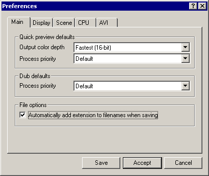

VirtualDub help - Dialogs: Preferences | |||
| On a crash... Dialogs: Video filtersVideo frame rate control Video color depth Video range Video compression Audio filters Audio interleaving Audio compression Audio conversion Audio volume Capture settings Capture preferences Capture volume meter Preferences |  Sets application preferences. Main tab:
Display tab:
Scene tab:
CPU tab:
AVI tab:
| ||